When you build a Demo, do you want to select a suitable shell for improving whole felling?
Skeleton Box 3.0 is the newest version, protection circuit device. There are serveral hool sites in Acrylic floor in order to ensure you can install a variety of circuit boards. When you need to lead wire from side to out, you can open expand hole sites in the acrylic panel.Skeleton Box 3.0 includes three modules: big, middle,small.You can choose modules according to individual requirement. More user experience waits for your participation.
| Item | Length | Width | Height | Unit |
|---|---|---|---|---|
| Skeleton Box 10x7 | 106 | 67 | 36 | mm |
| Skeleton Box 10x10 | 106 | 106 | 36 | mm |
| Skeleton Box 17x10 | 177 | 106 | 36 | mm |
Take Skeleton Box 17x10 as example, let's have a clear recognize about it.
图片
1.Epoxy plate frame
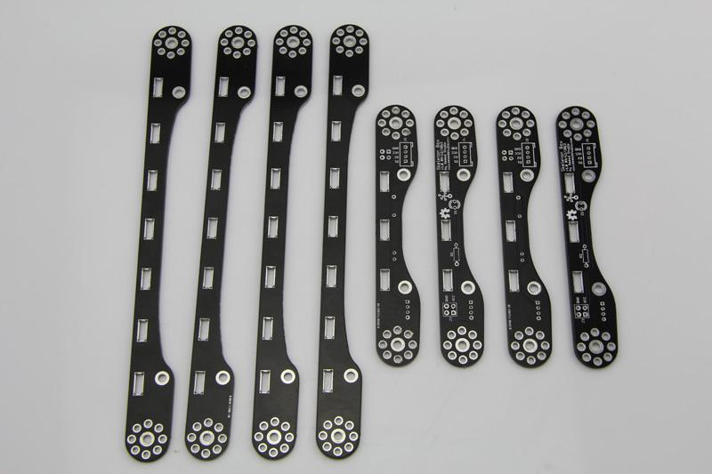
Skeleton Box 17x10 includes eight epoxy plate frames. The round hole sites are Screw holes and Rivet holes, while rectangular holes
are used to fix acrylic side panel. Next we focus on four middele size frames.
Four middele size frames retain Grove interfaces, power interface,resistance and LED interface which are used for user-friendly development.
2.Acrylic panel
Acrylic panel consist of four acrylic side panels and two acrylic face panels. One of them with many holes are used to fix different types of boards.
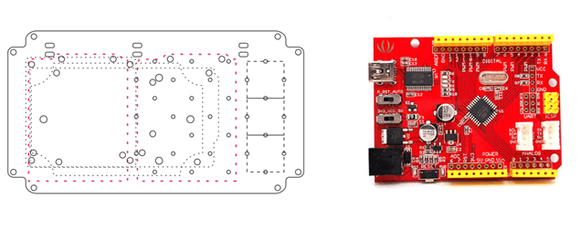
The read area marked above is used to fix Arduino、Seeeduino,or other Arduino shape modules,like shield modules.
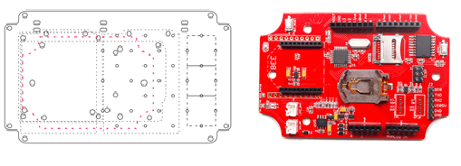
The read area marked above is used to install some modules which shape shoule be like Seeeduino Stalker.
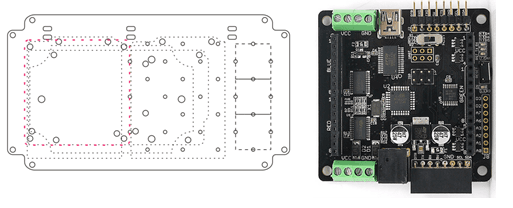
The read area marked above is used to install some modules which shape shoule be like Rainbowduino.
In fact， two acrylic panels also offer 2mm Grove holes, you can fix 1*1,1*2,1*3 Grove modules,see the following picture。
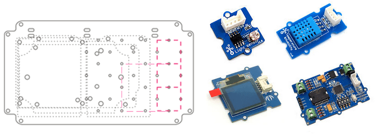
Two acrylics of four side acrylics include expand holes. When you need to lead wire from side to out, you can open expand hole sites in the acrylic panel.
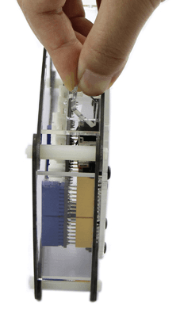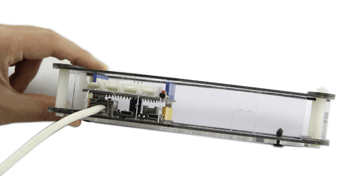
3.Fastener
Fasteners are to hold acrylic and epoxy boards.
You may refer to installation instructions blown.
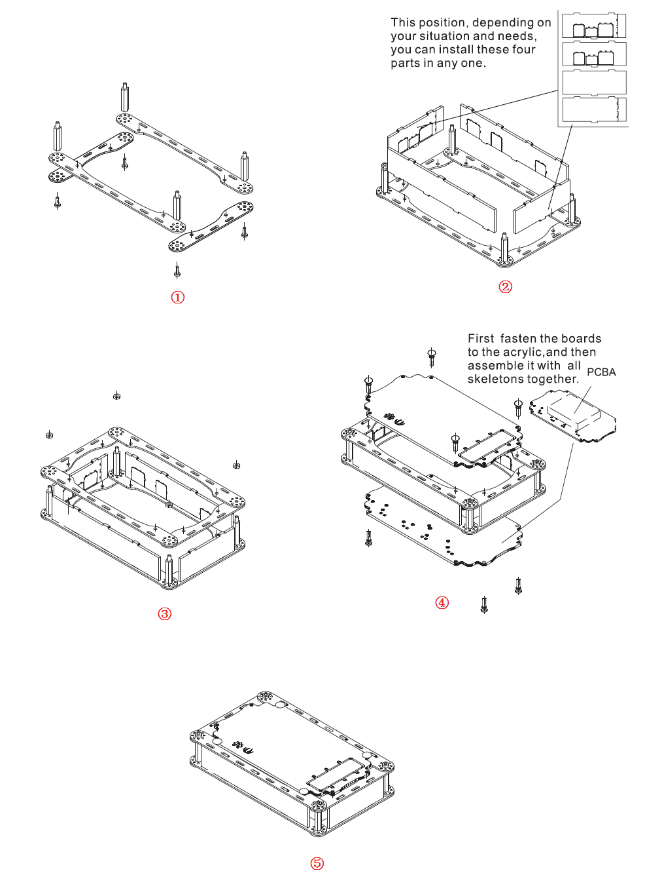
Skeleton box with excellent scalable can fashion into other shapes, not rectangle. Like showing blown：
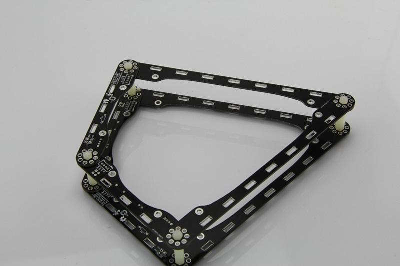
Build a irregular polygonal shell by using two 2mm nylon rivets and 3mm Screw studs.
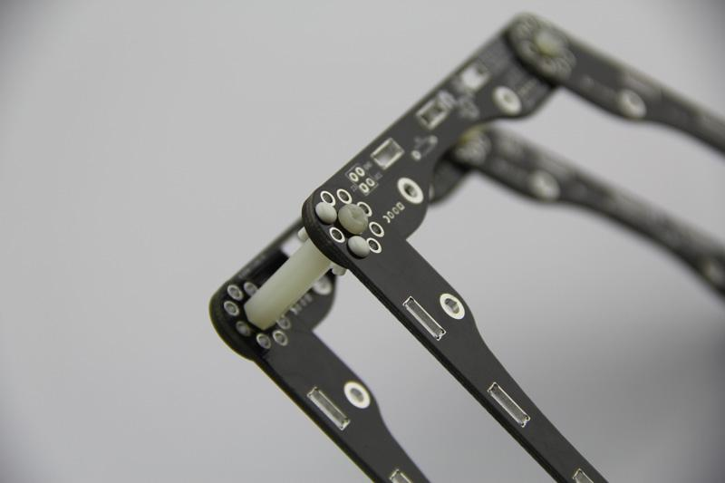
Note:Epoxy plate frames can concatenate into rectangle, but you should concern about location relationship between frames. It should look like the figure below: all long epoxy plate frames are at the top, and all short epoxy plate frames are at the bottom. It is important about the unity of location relationship between two epoxy plate frames, and it does not matter who are at the top. In other words, you should keep equal hight between two epoxy plate frames, so that acrylic panels and nylon studs can be successfully installed.
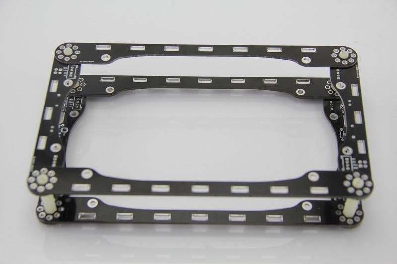